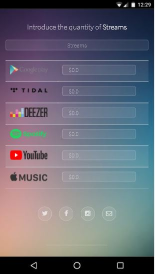

My Projects History
In this section I will put my projects in the course of time.


Currently, I am a student of Systems & Computing Engineering at the Universidad de los Andes, in this moment I am studying my last year.
I am passionate about the topics of information technology architecture, information technology for business and software development. I want to have the ability to lead the innovation project plan of an organization to build integral solutions (information, infrastructure, software and security), to complexs problems aligning the business strategy and the IT strategy.
Finally I want to contribute in the construction of modern and competitive companies identifying the needs and business opportunities to solve through the appropriate use of Information Technologies.
In this section I will put my projects in the course of time.